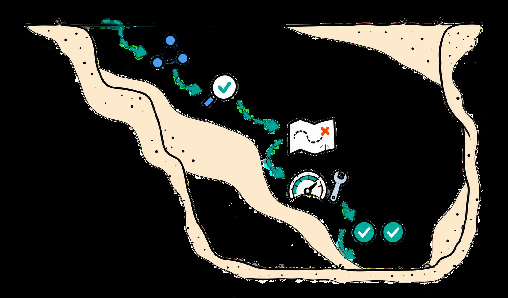
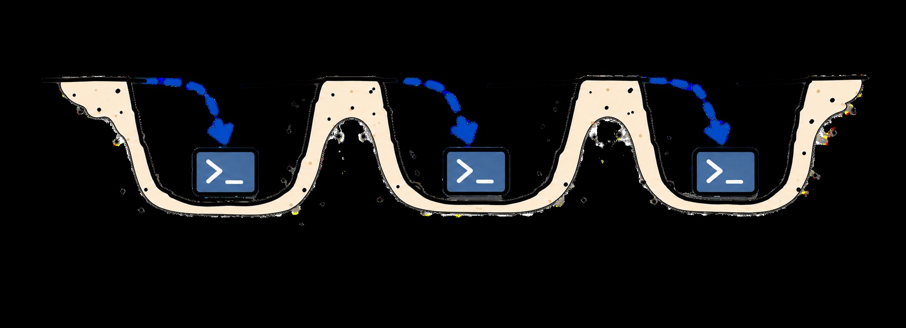

Scaling Agentic Data for Long-Horizon Terminal Intelligence
Zou, Shun, Ma, Ziyu, Zou, Yi, Wang, Yong, Chen, Lin, Chen, Zehui, Chen, Guanhua, Chu, Xiangxiang & Zhao, Feng
Abstract（原文）
展开 / 收起 Abstract 原文
01论文速览右侧批注 ›
先用几段话回答：这篇文章为什么要做、具体想解决什么、怎样做、最后得出了什么结论。
研究背景
终端智能体要完成真实工作，需要把探索、诊断、实现、检验和交付连接起来。已有环境合成能扩大任务覆盖，但构造者容易预装核心求解器、提供已经判定好的证据，或让故障分支在运行时无法触发。这样得到的任务文字可以很复杂，实际轨迹却绕过了预期训练的工作。本文关注如何在合成环境中保留需要智能体亲自完成的实质工作，并让这些工作跨阶段衔接。
研究目标
如何自动构造可执行、可验证的终端任务，使独立求解者实际经历目标行为，并通过同一目标下的连续扩展，形成可用于 SFT 的高质量长程轨迹？关键是让后续决策依赖之前取得的证据、状态和成果，同时保持公开要求与私有评分一致。
研究内容
- 先把“应训练什么工作”写进任务种子：Planner 根据已接收任务和失败记录找覆盖缺口，研究代理从文档、代码、issue及专业资料追踪实际需求。构造代理联合生成指令、环境、参考解、验证器和执行配置，求解者只见公开指令与环境。
- 通过独立试做找出被提前做完的部分：Challenger 实际执行，审查者比较预期工作和实际轨迹，追溯缺失环节来自预装工具、已给定判断还是没有触发的故障。构造者保留公开规格，恢复缺失的实现或判断需求，再交给独立执行检查。
- 用依赖关系扩展同一目标：从角色、机制、证据、方法四个方向增添旧解无法直接满足的新要求；让后续决策使用前期查询、操作反馈或当前实例状态。PhotoPrism三方合并、酒店场地故障后的设备调度提供具体例子。
- 筛选可学习过程后训练学生：每环境采两条教师轨迹，以有效性、环境证据驱动的进展和多轮训练价值决定保留。最终任务未完成的可靠过程也可进入数据；2,852条用于Qwen3.5系列全参数SFT。
主要结论
- 产出约 3K 条长程训练轨迹：1,535 个环境覆盖 25 个专业领域，过滤后保留 2,852 条；平均 52.8 轮、P90 为 98 轮，连续反馈链中位数 25 轮。作者报告每条平均包含 8.6 种核心行为模式（§3）。
- 终端能力和跨场景表现同时提高：Qwen3.5-27B 的 Terminal-Bench 2.1 从 46.82 升至 60.67，增加 13.85 个百分点；AutomationBench 全断言通过率从 5.5 升至 17.2，VitaBench 从 20.5 升至 31.8（表2）。
- 收益延伸到不同模型规模：35B-A3B 与 122B-A10B 在 Terminal-Bench 2.1 分别提高 13.11、14.98 个百分点。1K、2K 到完整 2,852 条数据的分数为 57.30、58.43、60.67，支持该数据在已测试区间的扩量价值（§4.3，图5—6文字）。
- 四个长时案例展示了实验、回退与交付行为：相同 12 小时上限下，最终隐藏归一化得分均提高；点云任务为 21.93→48.96。这些是每模型每案例一次运行的过程证据，尚不足以估计稳定的长期成功率（附录C，表5）。
这篇工作的可迁移设计是让实际执行成为合成质量的反馈信号。任务描述包含某种工作，不代表环境运行时一定需要做它：求解器可能已预装，故障可能未触发，证据判断也可能预先给定。重构与扩展让这些工作进入实际行动—观察链。整套数据的训练收益已有多基准结果；“行为连接本身造成收益”仍需等token、等预算和移除模块的实验识别。
02原文精读右侧批注 ›
沿着原文的章节顺序，区分每一节说了什么，以及这些内容如何支撑论文的论证。
分章节总结与分析
Abstract
p.1提出以保留和连接长程行为模式为目标的自动数据引擎，结合挑战重构与渐进扩展，用约1.5K环境训练27B模型，并报告12基准和长时案例的提升。
摘要建立了环境设计、训练数据和模型收益的链条；模块机制仍需正文实验识别，不能从整体提升直接推定每一环有效。
Introduction
p.1指出复杂任务可能被预装材料或工具简化，短轨迹难展示跨阶段修订和交付；提出保留实质工作与连接不同阶段两个挑战。
动机把任务描述复杂度与实际执行工作区分开，构成可检验的合成问题；缺少工作保留率的统一量化定义。
Method
p.3整条流程分为两个相接的离线合成阶段。第一阶段从专业需求构建任务，利用独立试做找出环境提前完成或省略的工作，再重构和复验；通过检查的任务及所有研究/审查记录进入下一批规划。第二阶段从已接受父任务出发，在同一目标上加入父解不能覆盖的新要求，使后续阶段使用此前的证据、状态和成果。
最终产物有两层：可执行任务包供教师交互采样；筛选后的多轮轨迹供学生SFT。环境设计、最终结果验证和训练轨迹准入各自有审查，输入和标准见2.2及附录F。
阅读方法时需追踪谁能看到什么、哪一步修改哪个对象、什么证据使版本被接受。这些接口决定了独立挑战能否暴露捷径。后续实验能证明整套数据有用，尚未分解两阶段及其交互作用。
Task Formulation and Design Objective
p.3任务的输入输出与权限边界（式1）。 一个任务包写作 $T=(I,E,S,V,M)$：$I$ 为目标和约束，$E$ 为初始文件、工具、服务及运行机制，$S$ 为参考解，$V$ 为私有验证器，$M$ 为执行配置。执行智能体只见 $P(T)=(I,E)$；研究记录、内部蓝图、参考解与私有测试均不提供给它。图2的抽取文字列出对应文件：instruction.md、environment/、solution/、tests/、task.toml。参考解证明一种路径可行，验证器应接受满足要求的其他实现。
设计目标包含三项可观察内容：环境中有需要主动寻找的证据；核心分析或实现尚待求解者完成；运行反馈能够改变后续判断与操作。对应的长程工作可以跨越探索、诊断、建设、检验和交付。这里的“独立”首先指构造信息与求解视图隔离，原文未要求所有角色必须使用不同基础模型。
公开规格与秘密测试有不同职责。 私有验证器可用未见实例评估泛化，但完成条件必须由公开任务及可发现证据支持；若未公开的目标精度、隐藏的业务规则参与评分，就会违反后文式3的设计原则。
对数据合成，五件套联合构造减少指令、环境和评分各自漂移的机会；它也引入共偏差风险：参考解和验证器可共同实现一个错误规则。本文给出执行审查与案例，未提供全量验证器误判审计。
Challenge-Guided Long-Horizon Synthesis
p.31. 规划下一批该合成什么（式2）。 批次 $b$ 中，$D_b$ 为已接收任务，$F_b$ 为研究、执行、审查和重构记录，$n_b$ 为可用研究槽位。Planner 计算 $Q_b=\mathrm{Plan}(D_b,F_b;n_b)=\{q_{b,i}\}_{i=1}^{n_b}$。每份 brief 指明专业工作范围、既有任务尚未覆盖的要求及应调查的真实来源。规划利用已有解法和反馈减少重复工作，原文没有给出可直接复现的覆盖增益函数、权重或固定采样配额。
2. 把专业需求落实成任务种子。 Deep Research Agent 阅读文档、代码仓库、issue 和专业资料，确定实际需求、技术约束以及完成证据；同时识别求解者应发现什么、还需分析/实现/调试什么、前一结果怎样支持后续工作。输出种子 $z_{b,i}$ 包含公开指令草稿与研究证据。真实材料为工作需求和机制提供依据，随后实例的文件、事件和服务状态仍可由模型合成。
3. 联合生成五件套。 Construction Agent 把种子落实为受控初始状态和可运行环境，明确提供哪些材料与工具、哪些工作留给智能体、怎样确认完成，再同步生成 $I,E,S,V,M$。只制造可运行程序还不够：例如核心拟合已封装成命令，环境仍能成功运行，却没有训练“实现拟合”的过程。
公开契约约束（式3）。 $C_{\mathrm{sem}}(V)\subseteq\mathrm{Sem}(I,O_{\mathrm{pub}}(E))$：左边是评分器检查的语义要求，右边是指令和可公开发现环境证据支持的要求。测试数据可以隐藏，评分标准不能增加求解者无从发现的条件。这个约束允许保留测试集，同时要求接口、保留原数据、输出规范等规则可知；文中将其作为设计原则，未给出对所有生成包的形式化证明。
4. 独立执行产生诊断证据（式4—5）。 Challenger 以 $h_t=(o_0,a_0,\ldots,o_t)$ 为历史，执行 $a_t\sim\pi_B(\cdot\mid I,h_t)$，环境返回 $(s_{t+1},o_{t+1})\sim P_E(\cdot\mid s_t,a_t)$。最终轨迹 $\tau_r$ 记录交互，验证器计算 $\rho_r=V_r(s_{H_r})$。审查使用 $d_r=A_{\mathrm{syn}}(T_r,\tau_r,\rho_r)$，联合任务包、实际行动—观察和最终评分检查运行缺陷、内部信息泄漏、评分不一致以及目标工作是否保留。
这一步在环境构造阶段可以看到私有评分。之后采集训练轨迹的过程筛选采用另一套审查：只读完整对话，不额外提供最终 reward（附录F）。两个审查环节的输入、用途与接受对象不同，不能合并成一次“按成功率过滤”。
5. Horizon gap 怎样定位。 先按种子列出预期工作，再检查独立轨迹实际完成了哪些工作；对于缺失项，追溯初始材料、对象关系和工具行为。原文例子是要求实现核心函数，环境却已经提供实现，剩下只需改一个常数。重构应恢复缺失的实现与调试需求，同时保留公开规格。合法的高效替代解仍应被允许；较短轨迹本身不足以判定环境有缺陷。
重构并再次独立挑战（式6）。 $T_{r+1}=\mathrm{Refine}(T_r;z,\tau_r,d_r)$ 保留目标，修改初始状态、对象关系、待实现内容或工具反馈，同步更新指令、参考解与验证器。新版本重新执行，确认缺失工作确实进入过程。例如 RabbitMQ 环境要让分区故障实际阻断应用路径，才能产生查明失败消息与恢复前驱事件的工作（附录H.2）。单纯把要求写进任务文字不足以完成修复。
6. 将执行缺口反馈到下一批规划（式7）。 通过审查和运行检查的任务组成 $A_b$，新增研究/执行记录为 $\Delta F_b$，更新 $D_{b+1}=D_b\cup A_b$、$F_{b+1}=F_b\cup\Delta F_b$。因此同一条执行证据既可修复当前环境，也可帮助 Planner 避开重复工作、选择后续专业方向。
任务内部的“挑战—重构—再挑战”与批次之间的“档案—规划—新增任务”构成两个反馈回路。原文没有报告全量重构轮数分布、平均调用成本、总体接受率或统一停止规则；H.2的五次重构和H.3的四次重构是案例记录，不能当成固定超参数。
实际被改变的是任务环境与任务契约。 重构可删去预装核心实现、使故障影响真实路径、撤除预先给定的判断，并同步修订公开信息与验证器。重新运行用于确认新要求已成为必需工作，故不能只比较重构前后的提示词长度。附录H.1—H.3给出数值拟合、应用恢复和资格审核的不同失败模式。
高效解与被提前代劳的解需要区分。 前者用更少步骤完成既定工作，后者的关键分析/实现已经存在于初始工具或材料；作者明确重构应针对后者。单次挑战没出现某行为，也可能来自策略或能力差异，因此适合以多挑战者、失败原因标签和合法替代解审计校准该过程。这些校准实验未在文中完整报告。
归因与复现边界。 内外循环的公式说明信息流，但没有定义可优化的标量horizon-gap分数，也没有给出批次配额和终止阈值。独立指信息隔离，不能自动等同于不同模型带来的错误独立；完整成本、接受率和对学生收益的直接模块消融仍缺失。
Progressive Horizon Expansion
p.57. 先提出扩展，再检验父解是否足够。 Evolution Agent 从通过检查的父任务出发提出新增要求，明确父参考解为何不能直接满足它，并确定新增分析、实现或验证工作。四种内容方向分别是：扩展角色，让既有成果服务相关责任；深化机制，加入先前简化的关系或不确定性；丰富证据，增加需要匹配和判断的记录；升级方法，要求实质修改旧解法。它们是可选方向，原文未要求每任务都按同一组合或顺序演化。
三类交互依赖把要求连接起来。 探索与判断：后续决策依赖通过公开查询、探测得到的信息。动作与反馈：先前操作的可观察效果触发诊断、修正或复验。实例变化与适应：同一公开规格下对象或状态跨次变化，求解者必须检查当前实例并调整动作。设计目的是让较后的工作使用前面的发现与状态；原文没有要求求解必须遵循某个固定脚本。
子任务是独立候选包（式8）。 $\widetilde T^{(g+1)}=\mathrm{Expand}(T^{(g)};\delta^{(g)})$ 合并原始与新增公开要求，同时调整环境、参考解和私有评分，评分继续服从式3。候选被接受后成为下一代父任务 $T^{(g+1)}$。这描述离线合成中的父子任务谱系，不能据此认定学生训练时始终在同一个不中断环境中依次经历所有代际。
附录I的例子帮助理解依赖。 PhotoPrism中先恢复照片身份，才能决定跨端编辑如何合并；酒店任务保留十项活动，增加场地关闭与设备移动约束，使旧计划中的局部修改影响其他活动。新增要求改变了判断与行动之间的关系，活动数量或输出文件数量可以保持不变。
父解覆盖检查是最低限度的非平凡性测试。 旧解不能直接通过新任务说明新增条件有作用，但仍可能被另一个简单固定脚本处理。还需检查新工作是否使用先前信息、反馈是否改变后续决策，以及是否因删除公开线索而制造不可解任务。
文中没有报告扩展代数总体分布、父子任务相似度、每代成功率或等长度无依赖对照。因此它给出可操作的设计框架和案例，尚未证明每一代都增加独立信息量或单位token收益。
Analysis of Synthesized Data
p.5材料来源与实例形态。 研究阶段调查公开文档、仓库、issue及专业资料，环境阶段将需求落实成受控文件、工具、服务、事件与状态。例如射电任务采用原生MeasurementSet、RabbitMQ任务运行真实broker和AMQP客户端，福利规则与家庭对象则是合成实例。专业需求的来源依据与每个合成实例的真实性需要分别核验。
规模与采样单位。 1,535个任务包覆盖25个主领域，每包采两条，筛选后2,852条。数据集的基本训练样本是轨迹；同环境重复采样及父子扩展会引入相关性，不能将2,852条视作完全独立的2,852种任务。原文未公布可据以计算的完整谱系、每领域接受率和失败原因分布。
示范内容。 平均52.82轮，P50为40、P90为98；最长连续终端反馈链的跨轨迹中位数为25；每条平均8.6种核心行为。以上量分别描述长度、持续反馈和行为覆盖，均不能单独替代正确性或单位token训练价值。
同协议长度比较。 作者从各开源终端合成方法随机抽300任务，以相同教师协议执行。图4抽取文字给出CLI-Gym均值15.60轮、P50为12、P90为30，TerminalHorizon为52.82、40、98；其他列出方法均值约3.87—12.63轮。比较说明当前任务池确实诱发更长交互。
长度以外的描述。 反馈链测量连续行动怎样由终端观察衔接；行为模式分类关注观察怎样进入判断、诊断、构造和检验。五类27模式可共现，单条轨迹平均8.6种。完整模式及其具体判据见E.1—E.2，不能仅凭某命令出现就判定某模式成立。
三个统计量不能相互代替。 很多轮询可制造长轨迹；长反馈链可包含重复无效动作；模式多也不保证结论或交付正确。需要把这些过程描述与有效进展、最终评分、错误恢复和训练收益联合检验。
300任务的相同教师协议控制了部分采集差异，但任务池、工具粒度及环境反馈格式仍不同。本文没有对比等token短轨迹与长轨迹训练，也未充分给出8.6种模式的全量标注流程和一致性；从描述性统计到机制解释仍有距离。
Experiments
p.6本节为实验总标题，具体评测设置、结果、规模分析和长时应用由4.1—4.4展开。
标题本身无独立实验内容；判断证据需落到下属协议、表格和单次案例范围。
Experimental Setup
p.6评测问题分为三层。 终端任务测试是否学会在终端环境持续解决问题：TB1.0、2.0、2.1；生产型智能体任务测试是否迁移到其他工具协议和业务反馈：AutomationBench、τ² Airline/Retail、VitaBench；五项通用推理测试检查训练后基础推理是否受损。本文报告共12基准，AutomationBench的两个分数属于同一基准。
9. 学生学习的是整段多轮过程。 用筛选后的数据全参数SFT Qwen3.5-27B、35B-A3B、122B-A10B，统一训练3epochs，报告最终checkpoint。本文报告的模型改进来自SFT流程，未加入本文自己的RFT或在线RL阶段。训练处方包括262,144最大序列、BF16、ZeRO-3和FlashAttention-2，详见附录A.1。完整对话中的teacher错误是否进入监督、各角色token的loss mask、超长序列的具体处理策略，当前正文与附录未充分说明。
需要分开理解三种“质量”。 环境构造审查判断任务是否可运行、契约是否一致、预期工作是否保留；私有验证器判断某次结果是否满足完成要求；轨迹筛选判断过程是否适合作为示范。通过私有测试的捷径解仍可能没有目标训练经验，有价值的失败过程也可能未通过最终测试。该区分是理解这套合成系统的关键。
训练资源口径。 正文默认144张H20-141GB、18节点；262K为最大序列长度，不能据此推得每条轨迹实际token数。附录A.1补充“不packing”、每设备batch1和seed42。评测的8卡TP8与训练的144卡设置不同，不能混用来估算复现成本。
主表比较有多个混杂变量。 表1混合不同基座、模型规模、轨迹数、harness及训练方案；同基座同harness的Terminal-Universe比较更接近，但仍未控制token、教师和成本。TB2.0基座41.6带模型卡脚注，直接差值的解释需保留这一来源限制。
正文未明确到足以逐项核对loss mask、完整有效batch、超长轨迹处理和GPU小时。SFT对三模型均用3epochs说明配方相同，仍不保证不同参数规模的计算量相同。
Main Results
p.7表1：终端任务表现。 27B在TB1.0由46.3升至55.0（+8.7个百分点），TB2.0由41.6升至55.8（+14.2）；TB2.1在表2为46.82→60.67（+13.85）。表1的41.6带†，脚注表明来自官方模型卡，需与附录声称的同条件评测口径区分。与同Qwen3.5-27B基座和Terminus-2的Terminal-Universe比较为52.8→55.8，轨迹数约32K对2,852。不同方案未匹配训练token和构造成本。
表2：迁移与推理。 AutomationBench的Pass Rate为5.5→17.2、Partial为26.4→49.7；二者分别表示全断言通过率和断言满足比例，分差均为绝对百分点。τ² Airline为79.0→84.5，Retail为84.9→87.5；VitaBench为20.5→31.8。MATH-500为96.9→98.9，GSM8K为96.3→97.3，AIME2024为93.3→96.7，AIME2025为86.7→93.3，KOR Cipher为90.1→91.2。共12基准，AutomationBench两个指标来自同一基准。
同基座数据量比较。 Terminal-Universe-27B使用约32K轨迹，在同Qwen3.5-27B、Terminus-2组合上得TB2.0的52.8；本方法2,852条为55.8。它支持当前方案以较少示范条数取得较高分数。表中更大数据和其他模型的结果可作背景，不能直接转化为本文每条样本的净价值。
最稳妥的结论是整套训练组合有效。 各终端和业务基准提升方向一致，说明收益延伸到原始终端接口之外；通用推理点估计也未见下降。不同基准分数定义不同：断言比例、全任务通过率和准确率不宜平均成一个“综合提升百分比”。
数据效率应明确分母。 条数优势没有控制平均轨迹长度、总训练token、教师生成和环境研究/重构成本；正文还报告较重的训练资源。因此可说“按轨迹条数表现出较高效率”，无法据此认定总计算或总费用更低。
不确定性仍未量化。 主要差值没有区间或配对统计，AIME每年仅30题，TB每版约80—89题。不能从“所有点估计提高”推出每一项变化均显著，更不能直接归因于某个行为模式。
Analysis and Ablation Studies
p.8教师比较：相同100任务，不同求解策略。 GLM-5.2与DeepSeek-V4-Pro-0813的平均轮数为46.1/53.5，平均反馈链19.2/30.3，完全重复率15.8%/13.2%，通过率44%/50%（表3）。作者据此选DeepSeek采集：它在这批任务上交互更持续、重复略少、完成率更高。
模型规模：同一家族三个基座均受益。 TB2.1的27B为46.82→60.67（+13.85pp），35B-A3B为39.70→52.81（+13.11pp），122B-A10B为49.06→64.04（+14.98pp）。结果表明同一数据可用于密集与MoE配置，不能从参数总量或激活量直接推得能力应单调排序。
数据量：已测试范围继续改善。 1K、2K及完整2,852条的TB2.1分数为57.30、58.43、60.67，基座46.82。扩量有效，但没有更大数据、更多随机子集或固定更新量对照来拟合scaling law，也不能保证继续扩量不饱和。
本节没有完成关键方法消融。 教师、规模与条数分析回答适用条件和扩量趋势；未移除独立挑战、gap重构、渐进扩展或过程筛选。因而无法把+13.85pp分配给各模块。
教师能力、链长、重复率和通过率同时变化，长链与高分的相关性不证明长链造成高分。数据量增加也可能同时改变领域覆盖、父子谱系比例与总更新token，需另设固定资源对照。
Long-Horizon Task Applications
p.8要观察的能力。 智能体得到可执行初始方案后，是否继续设计实验、根据反馈修订方法、识别错误代理指标，并将有效改进保留到最终交付。四个RSI-Exam案例统一12小时研究上限，研究过程不可见隐藏评价，最后由原生验证器评分实际提交。
点云案例的关键转折。 基座以“与第一视图接近”建立代理指标，0.05距离阈值上的代理F-score达到1，12.1分钟后提前结束；这种检查可能奖励只保留第一视图附近的点。改进模型也遇到约0.989的高代理分，但检查各视图贡献后用留一视图诊断暴露缺失覆盖，进一步修订配准、全局优化和置信度筛选。
最终结果与口径。 点云隐藏原始F-score为48.04→77.68；经任务校准的归一化奖励×100为21.93→48.96，即+27.03分。其余三例见C.1—C.3。正文“27.03%”应结合附录理解为该归一化量表上的分差，不能直接写成相对准确率提升27.03%。
这类轨迹能具体展示“评价自己的评价”以及交付时保留成果，弥补聚合分数看不到的过程。但每例每模型仅一次，且实际用时差异大，不能据此推定12小时运行下的可靠成功概率或把优势全部归因于更合理的实验策略。
Related Work
p.9区分长程执行harness、终端环境合成与本文关注的跨阶段行为经验，将方法放在覆盖、复杂化和行为连接的研究谱系中。
文献定位有助于确定待检验变量；本文未按同基座、同token重训已有合成方法，相关工作对照仍以汇总表为主。
Conclusion
p.10总结挑战重构和渐进扩展对整体训练的价值；同时提供AI使用、伦理与复现声明，指向附录中的协议、筛选和去污染。
声明说明作者使用生成模型构造环境与轨迹并人工审阅内容。复现声明提供方法入口，尚不能替代总成本、完整代码可运行性和许可证核验。
Implementation Details
p.16附录A为实现细节总标题，下设训练与评测协议。
将训练和评测参数分开读取有助于防止把评测8卡设置误认为训练资源。
Training Details
p.16训练处方（§4.1、附录A.1）。 LLaMA-Factory全参数SFT；AdamW，β₁=0.9、β₂=0.95，峰值1e−5，cosine，warmup0.05，weight decay0.1，梯度裁剪1.0；3epochs取最终checkpoint；BF16、DeepSpeed ZeRO-3、FlashAttention-2；262,144最大序列，不packing，每设备batch1，seed42。正文默认144张H20-141GB、18节点，这属于原作者报告的资源，当前精读未在本服务器运行训练。
与前篇训练流程的区别。 本文终点是三个Qwen3.5学生的全参数SFT及外部评测，未报告本文模型进行自采样拒绝微调的阶段；前篇GraphForge另有RFT分析。比较两篇时，应分别追踪数据生成质量、示范过滤规则和学生训练目标。
262K上下文、不packing及长轨迹使条数无法直接表征负担。原文没有足以恢复全局batch、训练时长、显存利用、token角色mask与超长样本处理的完整信息；同seed和同处方也不提供训练随机性误差估计。
Evaluation Protocols
p.16统一服务与一般解码。 vLLM、8张H20、TP8、262,144上下文；TB、AutomationBench和通用推理temperature1.0、top-p0.95、top-k20、每响应最多65,536输出token。原文声明基座和微调模型在相同任务、框架和评分下比较；TB2.0表1模型卡脚注仍需单独保留。
Terminal-Bench。 1.0的80题用Daytona，每环境2CPU/4GiB内存/8GiB存储；2.0和2.1各89题用E2B。Harbor与Terminus-2、JSON解析，每题3小时；剩余上下文估计不足131,072token时主动摘要。每题独立运行3次，报告mean pass@1；基础设施错误最多重试2次，重试不等于额外择优机会。
AutomationBench。 v1.0.6官方全集600rollouts，每轨迹50步；每模型三次独立运行，报告Partial及全断言Pass Rate。中断样本最多再重试三轮，仍未完成记0。
VitaBench。 英文Cross-domain100任务，覆盖外卖、到店与出行；每任务4次、最多300步、错误上限10、seed300。智能体temperature0、输出65,536；模拟用户和轨迹裁判DeepSeek-V4-Pro-0813、temperature0、输出32,768。官方rubric滑动窗口评价，Avg@4为400次成功率均值。
τ²-bench。 v1.0.1 base split：Airline50、Retail114任务，各4次、最多200步、错误上限10、seed300。智能体、模拟用户与自然语言断言裁判temperature0，后两者用DeepSeek；未额外指定单次输出上限，API/模型错误最多重试3次。
通用推理。 MATH-500有500题，GSM8K1319题，AIME2024/2025各30题，KOR Cipher250题；每题一答案，三次独立评测取平均准确率。前四者通过EvalScope原生评价，KOR采用官方zero-shot及答案归一化。正文抽取中EvalScope版本同时出现1.11.1与带脚注的写法，复现时需核实实际环境版本。
重复试验的单位必须保持清楚。 mean pass@1及Avg@4均对重复运行求均值，与允许多次尝试后选最好结果不同；技术性重试也不能直接当新试验。三个或四个重复未提供训练种子敏感性、完整分数区间或方法模块归因。
Vita/τ²采用与训练教师同系列的模拟用户和部分裁判，可能形成评测风格相关性。这是潜在威胁，原文没有证据表明实际产生了多大偏差；不能把它写成已发现的评分污染。
Additional Experimental Analysis
p.17本附录组织任务类别表现与轨迹数效率两类补充分析。
这里无新增独立实验结论，证据由B.1和B.2承担。
Performance across Task Categories
p.17TB2.1按16个类别拆分，11类提升、5类持平。数据查询1题对应+66.7pp、调试5题+46.7pp、数据科学8题+25.0pp、机器学习3题+22.2pp、文件操作5题+20.0pp；还包括数学、训练、系统管理、软件工程、安全和处理类的正增量。科学计算、游戏、优化、个人助理和视频处理持平。
该分布显示收益并未只出现在一种终端工作上；但类别题量从1到26不同，三次重复会使单题类别以33.3pp为单位变化。数据查询的+66.7pp应与“仅1题”的分母一起读。
需要避免把小类别大分差解释成稳定的行业级泛化优势。原文未给类别置信区间，也没有分层抽样或新的大规模领域测试；它提供宽度线索，不能精确定位哪些行为模式带来哪些任务收益。
Data Efficiency
p.18TB2.0中，本方法用2,852条达到55.8；Terminal-Universe同Qwen3.5-27B基座和Terminus-2用约32K条达到52.8，分差+3.0pp。图9横轴是报告轨迹条数，同时画出不同模型规模、SFT/RL等方案。
按条数比较，本方法更省示范；然而52.8轮平均轨迹可能携带较多token，研究、挑战、重构与采样的总开销也不同。文中未报告足以重算的总训练token、合成调用费用或GPU小时。
复现或选方法时至少应同时报告环境数量、独立种子与谱系数量、有效训练token、生成成本、训练计算及推理预算。图9的条数—分数关系支持有限口径的数据效率，尚不足以比较端到端成本效益。
Additional Long-Horizon Task Applications
p.18四个案例跨组合优化、物理反问题、随机游戏与几何重建，重点看持续实验和最终交付。两模型使用同任务、研究指令、解码与评价，E2B环境8GiB内存、Terminus-2研究harness、12小时上限。可查看材料、改代码和跑开发实验，不能访问隐藏评价分数；允许提前结束。
表5完整口径。 机器人14.63→39.72（+25.09），实际研究11.42h/12h；潮汐27.41→48.15（+20.74），1.12h/12h；2048为37.54→45.25（+7.71），1.28h/12h；点云21.93→48.96（+27.03），0.20h/12h。分数均为原生归一化奖励×100，时间不含环境准备和最终验证。
评分对象是最终提交。 评价器不会事后从历史版本挑最佳checkpoint。原始行动—观察、实验记录、保存的实现和最终评分共同支持案例分析，因此“曾经找到好解”和“最后交付好解”可以区分。
每模型每案例只有一次研究运行；多个隐藏实例只检验该次提交的泛化，不构成智能体独立研究运行的重复样本。相同时间上限也未控制实际使用的计算量，提前退出可能同时反映停止策略与较少搜索。
案例有助于提出机制假设，仍需多次随机运行、更多任务、固定实际预算或限制提前退出的对照才能估计长期可靠性。
Warehouse Robot Routing and Macro Optimization
p.19任务将路线与控制程序压缩耦合。 机器人在带障碍仓库收集彩球并投至对应篮子，可移动、转向、交换及录制/回放宏；目标是减少按钮次数，同时受宏展开原子动作上限约束。开发100公开实例，隐藏200实例，失败或非法解受惩罚。几何最短路线未必产生最短控制程序。
改进模型的搜索。 先建方向感知路线，再加入单宏和顺序宏替换，扩展初始化、路径反转与两点交换，公开均值成本651.42降至281.92。一个C++局部搜索耗时更久、成本281.96，遂回退；较小实例的精确动态规划则保留为候选。最终按压缩后按钮数选路线，提交均值281.11。
基座有进展但最终版本退化。 它也搜索11.42小时，公开最佳记录286.05；后续移除宏压缩，实际提交成本466.35。改进模型运行到12小时并保留较强版本；最终隐藏奖励14.63→39.72。
案例把寻找候选、比较候选、回退与最终版本确认连成训练目标。只用历史最优曲线会漏掉基座提交退化，评价实际提交更接近自主工作的交付要求。
它同时改变解法质量与版本管理；单次轨迹不能分别估计两者的贡献。适合作为研究最终交付保持率的起点，该指标和专门对照属于后续设想。
Tidal Seabed Friction Field Inversion
p.20任务与测量对象。 从地形、边界驱动及稀疏复杂潮位测量估计24×24有界对数摩擦场；部分测点存在未标记大误差。正演会平滑摩擦差异，逆问题不适定。开发6个公开盆地、隐藏8个，最终按未用于拟合的测点潮位RMSE评分。
模型修订路径。 基座用4×4双线性参数化、坐标下降和残差剔除，公开RMSE0.023616后在1.12小时停下。改进模型比较空间基、鲁棒损失和正则，采用块状系数加深度/对数深度特征、相邻系数差惩罚和Huber损失，再剔除两个最大残差测点重拟合；通过留出的公开案例和额外合成盆地检查扩展性。
最终结果。 改进模型公开提交RMSE0.011118；隐藏均值0.021873→0.009386，约降57.1%；归一化奖励27.41→48.15。公开历史最好0.009858与提交0.011118不同，不能把最好记录当作最终成果。
潮位预测改善不等于摩擦场真值恢复。 评价以其他测点的预测误差为准，病态逆问题可能有多个参数场产生相近观测。该边界对合成科学任务的目标与验证器设计尤其关键。
示例盆地02按最大相对RMSE改善事后选择，单幅示例不能代表总体；完整8盆地结果和单次研究运行也应分别理解。
Strategy Optimization
p.21任务限制。 在随机2048中编写确定性决策函数，只用Python标准库，满足每步延迟与共享CPU预算；公开8seed，隐藏16个不重叠seed。更深搜索、缓存和启发式权重同时影响策略质量、速度与跨seed泛化。
两模型均先建立搜索。 基座尝试expectimax、自适应深度、角落偏好，恢复公开最好策略，在1.28小时停下。改进模型继续加入即时合并奖励、选择性记忆化并调整空格、平滑度、单调性、tile值权重；无界缓存版本无法完成公开集后，改为有选择的缓存。最大tile用对数特征后，公开均值59,509.0升至65,084.5。
实验后的选择也参与结果。 后续一些配置在小子集较好、完整公开集退化，改进模型回退后提交更强版本。最终公开均值30,257.0→65,084.5；隐藏23,183.75→38,626.25；归一化奖励37.54→45.25，4096最大tile出现0/16→5/16。两策略隐藏有效运行率均1。
分差主要落在策略质量，不能解读为避免崩溃的成功率提高。缓存失败—恢复和对子集好结果的否决展示了可学习的试错过程，但8个公开seed的反复调参仍可能过拟合。
可把“无界缓存”“局部子集提升但全量回退”作为有证据的失败过程，研究怎样保留这些经验又控制SFT错误模仿；论文没有提供该类样本的独立训练消融。
Multi-View Point-Cloud Fusion
p.24输入、公开反馈和最终目标。 多视图点云含噪声、部分重叠、未知小刚体变换和逐点置信度；第一视图定义坐标系。求解须在输出点数上限内完成对齐、去噪与表面覆盖。公共self-check仅验接口，没有真值几何或质量评分；隐藏9场景按三种距离容差的对称precision–recall F-score评价。
错误代理怎样诱发提前结束。 基座尝试ICP后，以参考视图质心平移其他视图，只保留靠近参考的点；自设代理均值0.8994、0.05阈值各例1.0，于12.1分钟结束。它检查的是与部分观测一致，可能删掉只在其他视图出现的表面。改进模型早期也得到约0.989的高代理分，随后检查各视图贡献，质疑选择过程是否只复制参考视图。
诊断改变方法与评价。 留一视图诊断揭示缺少被排除视图的覆盖；最终方法距离阈值过滤对应点、刚体估计、各非参考视图相对其他已对齐视图做联合优化，两轮全局细化后从合并点云中选高置信度点。最终原始F-score48.04→77.68，校准归一化奖励21.93→48.96。
这是代理高分、接口合规与目标正确性之间差距的具体案例。构造训练任务时，应提供能够揭露错误的环境证据，并保留独立最终验证；若公开代理完全等同隐藏目标，可能减少主动设计诊断的需求。后一句是研究启发，原文未进行该条件消融。
与其他RSI例子一样，单次研究及基座提前退出限制归因。该例支持一个合理机制假设：持续实验可能改善对自身测量方式的校准，尚不能证明这种行为由哪项合成模块单独学得。
Professional Domain Coverage
p.241,535任务分属25主领域，含教育、农业、医疗、财务和科学；强调终端作为统一交互接口，不限定任务行业。
领域标签说明题材范围；合成规则和模拟服务仍需与真实业务有效性区分。未提供每个领域的训练收益或可靠性估计。
Agentic Behavioral Patterns
p.25附录E为行为模式定义与组织方式总标题。
具体定义和证据位于E.1—E.2；分类标签本身不足以证明训练机制。
Definitions and Taxonomy
p.25行为模式的单位是相互连接的行动、观察和后续决策。 例如“假设驱动诊断”需要看到具体假设、针对它的测试，以及结果如何加强、削弱或修订判断；仅出现一条grep或一段自述计划不足以成立。27种模式分五个家族，允许同一片段支持多种模式，同一种模式也可跨阶段反复出现。
分类的用途是描述怎样推进工作：信息探索与判断、诊断与纠正、建设与进展、验证与确认、策略与执行协调。职业领域描述“做什么”，工具类型描述“用什么”，行为模式描述“证据怎样组织成解决过程”。完整定义所在表6—7随E.2一起解读。
把行为当作结构来标注，比按命令关键词计数更贴近作者目标；它也要求标注者能追踪跨步依赖。作者未充分报告全量标注员、模型、标注协议、人工一致性或置信度。平均8.6种应作为作者报告的描述统计，不能当作已校准的能力指标。
Organization of Behavioral Patterns within Trajectories
p.25表6：探索与诊断的11种模式。 探索5种：问题驱动探索——前次发现改变后续搜索对象；关系追踪——沿调用、数据、身份或来源关系定位；多源整合——建立来源间对应并联合判断；候选比较——按显式标准选择或暂缓；工具探测——试验未知接口并在后续使用所得理解。诊断6种：错误指向纠正、检验具体假设、复现异常、差分/分区定位、运行轨迹或性能信息定位、修改后重新检查同一问题。
表7：建设5种、验证6种、协调5种。 建设包括分解并组合子问题、建立被后续使用的前提、增量实现并集成、测量—比较—调优、逐项处理和异常分流。验证包括多项有意义检查、与明确期望关系比对、具有不同误差来源的独立交叉检验、固定设置重复评估稳定性、关键条件改变后复验、逐项核对需求与交付。协调包括证据驱动策略修改、分支探索和回退、耦合对象协同、异步任务管理、动态环境的序列决策。
TLS网关：后续失败让诊断重新进入实现。 先区分直接握手与重试路径，再修复路由；后端缺少客户端身份引出第二处修复；网关日志记录84bytes但客户端无响应体，又将调查转向请求读取和关闭连接。修复及一次失败测试启动后的恢复，最后由端到端与非法客户端拒绝检查收尾。
中子衍射：测量决定下一次测什么。 仪器校准和先导原始计数定位信号下降，升温测量把区间缩小到100—125K附近，降温测量帮助比较热路径依赖；比较连续与滞回模型的BIC，最终提交带13个run ID的拟合并关闭研究。护理排班则由连续六窗口的住户与人员事件驱动；末窗负荷19、17超过容量15，SQL核算后重新分派、补齐持证任务，再验证并提交B1—B6。
三例解释局部片段如何连接成整条工作链，作者明确不把它们用作模式频率或时长估计。验证证据也有强弱：TLS只见局部回归通过；中子案例未公开独立验证器重拟合结果；护理SQL与validator虽用不同检查路径，仍共享数据库输入。
独立交叉检验要求实质不同的误差来源，因此“用了两个检查命令”不足以满足该定义。数据合成审计应记录检验是否真正独立以及尚未覆盖的目标，而不只给行为标签。
Trajectory Filtering Criteria
p.28过程筛选的三个维度。 gpt-5.6-luna（reasoning effort=high）读取完整轨迹，分别判断行动—观察对应和权限是否有效、决策是否依据真实环境证据产生进展、是否包含值得学习的连贯多轮工作。少量已恢复的JSON/命令错误、最终未完成或诚实停在障碍处都可以保留；私有答案泄漏、篡改内部状态、持续忽略反馈和大量无效重复应排除。等待、轮询和基础设施操作不因增加轮数获得额外价值。
维度一：有效性。 行动与观察须可对应，任务上下文和环境须正确；严重截断、持续协议损坏、错误容器、核心过程依赖泄漏答案或越权改状态应丢弃。少量无效JSON或命令错误若被识别并恢复，可以保留，因为它们包含可追踪的修复经验。
维度二：环境证据驱动的进展。 文件、日志、报错和测试结果应支持关键动作与策略改变。证伪一种方案、定位根因或发现约束均可算进展；持续忽视反馈、随机尝试、重复无效动作以及执着于与观察矛盾的结论应被排除。这个维度评价整体行动链，不要求每次尝试都成功。
维度三：多轮训练价值。 需要相连的探索、实现、验证、假设修订或恢复过程。等待、重复polling、机械循环、SSH/Docker/Harbor等纯基础设施操作不因增加轮数获得深度；没有固定轮数阈值。最终失败或停在尚未解决的障碍处，仍可能提供可靠示范。
总判决及错误容忍。 KEEP要求整体有效、依环境证据推进且多轮过程值得学习；DROP针对核心捷径、全局无效、持续错误或退化。J.1还允许孤立的不正确终判或无依据完成声明，只要它未破坏主要过程。这说明质量评估存在整体权衡，并非保留样本逐句无误。
优势与噪声需要一起评估。 保留失败恢复经验可避免只见成功终局的偏差，但SFT也可能模仿被保留的错误声明或不良动作。本文未报告保留轨迹中最终失败的比例、具体错误类型和loss mask，也未分离成功/可靠失败各自的下游收益。
过程审查不额外接收reward，可减少把最终成功直接当质量的做法；完整轨迹仍可能包含测试通过等结果线索，因此不能称为完全结果盲。缺少人工校准、误拒误收及模型更换对照，筛选可靠性尚待独立审计。
Detailed Benchmark Decontamination
p.30描述训练任务与评测实例的指令级去污染流程，联合精确片段、近重复召回和语义审查。
该审计评估可检出的任务复用风险，其结论范围取决于检索召回及比较字段。
Comparison Corpora
p.30训练侧读取1,535份完整instruction.md；评测侧共3,251实例，覆盖TB三版、AutomationBench、Vita、τ²两域及五推理基准。对Vita/τ²保留完整用户情境、目标、已知信息、约束及可能逐步披露的要求，对KOR拼接密码规则与题目。
表8明确比较字段：TB指令、AutomationBench生成prompt中的用户消息、Vita的instructions/user scenario及非空历史、τ²完整场景、数学题目、GSM问题、KOR规则标题/内容和问题。不摘要、不截断，不比较参考答案、私有评分或预期执行结果。
比较字段保留实例特色，减少摘要造成的漏检；与此同时，它界定了审计只覆盖公开问题描述。附件事实、服务实现、隐藏测试和教师记忆未由这一流程完整检查，不能将“任务描述未发现复用”扩大为全部来源无重叠。
Text Overlap and Near-Duplicate Retrieval
p.30规范化与精确重合（式9）。 文本做Unicode NFKC和小写化，按连续Unicode字母、数字与下划线分token。完整文本比较后，以stride1扫描13/14-token窗口，$E_n(x,y)=\mathbf1[G_n(x)\cap G_n(y)\ne\varnothing]$。较长原样片段是候选信号，所有匹配仍需结合任务含义判断。
近重复检索（式10）。 $J_5(x,y)=|G_5(x)\cap G_5(y)|/|G_5(x)\cup G_5(y)|$ 衡量局部短语复用；词和二元词TF–IDF的余弦相似支持词序改变下的近邻召回，采用对数词频和平滑逆文档频率，在训练加当前基准语料上拟合。
符号与分布检查。 额外保留LaTeX命令、数字、运算符扫描连续数学8-gram，召回可能被普通分词漏掉的公式；通用公式和接口也会重合，不能直接判污染。base2 unigram JSD只刻画语料词分布差异，不进入污染裁决。
多种检索器补充不同表面形式，但语义复现可能改变全部词汇或符号。若缺少已知污染/清洁人工集及注入改写实验，就无法量化召回率；低Jaccard、低TF–IDF或高分布差异均不能单独证明无污染。
Semantic Assessment of Candidate Pairs
p.30候选池怎样形成。 每个基准合并完整文本与13/14-gram全部匹配、TF–IDF最高10对、5-gram Jaccard最高5对、数学8-gram共享数最高5对；仅非零项进入，合并去重。该策略选择高风险对，未对所有任务组合做模型语义审查。
语义判决看实例结构。 gpt-5.6-luna（high）读两边完整描述，比较核心目标、初态、关键对象和数据、独特约束组合、所需转换及完成条件。直接复制、小幅改写或改名后仍保留特色实例结构应判污染；仅共享行业、工具、术语或常见工作模式可判清洁；证据不足保留uncertain。J.2要求输出比较证据。
固定top-k限制低词汇相似改写的召回；同一模型还承担过程筛选，两种审查的质量均未用人工一致性和敏感性实测校准。语义审查有助于减少把通用公式误判污染，但它的零检出结果仍条件于候选召回。
Decontamination Results
p.31表9报告12组均没有规范化全文或13/14-token连续重合；最大5-gram Jaccard为0.006024，最大TF–IDF余弦0.083445。数学8-gram召回405对短片段重合，合并多检索器后190对实际语义审查，均未判污染或不确定，故1,535任务全部保留。
数学重合主要来自KOR210对、TB2.0和2.1各83对、MATH15对、TB1.0的8对和AIME2025的6对。190是去重候选审查数量，405是数学短片段重合对数，两者分母与意义不同。
结论应限定为在这套公开描述检索与模型审查中未发现评测任务复用。无法从190对清洁推得近499万训练—评测组合、附件、工具实现以及基座/教师预训练数据全部无污染；也不能计算未经标注的漏检率。
Case Studies of Challenge-Guided Reconstruction
p.31选数值校准、分布式恢复与福利管理三例，追踪初始试做→重构→再次独立试做。
案例展示失败合成的具体原因和修复方向，但属于定性选择，不能估计该类缺陷的总体出现率。
Radio-Interferometric Calibration
p.32任务目标。 校准合成Northstar-10射电观测，数据用原生MeasurementSet存放；保留原始测量和元数据，拟合以外的holdout及target用于验证。环境有casacore、NumPy和SciPy。
初始包已经提供关键实现。 mscal solve-bandpass和solve-gain完成数值拟合并写原生校准表。独立挑战者识别数据字段、调用求解器、应用并查残差，还在失败后改过拟合字段选择，最终通过；但没有实现拟合过程。任务成功掩盖了训练工作被工具封装的事实。
重构与再挑战。 移除内置拟合，保留检查、校准应用和残差反馈；为两个谱窗引入不同时间变化响应，并公开解轴和表规范。新挑战者检查数据轴、实现拟合，对高残差修订谱窗参数，写入并应用原生表，再检查原始数据未变并在未拟合holdout/target上验证。
最终加权RMS：拟合集0.896、holdout1.784、target1.944，均低于公开阈值2.8；独立运行通过。这些数值属于重构后的同一任务，原文没有提供可比的旧新RMS提升。
恢复的是建模、数值实现和残差驱动修订的必要性，同时保留了可解所需规格与反馈。前后都通过验证器却训练过程不同，说明结果正确与训练经验充分应分别审计。
删掉核心功能也可能无意提高专业门槛；任务可解性、合法高效算法和不同能力挑战者的结果需要独立验证，当前案例不能估计全数据的修复收益。
RabbitMQ Recovery Across Broker and Application State
p.32目标与初始捷径。 三节点RabbitMQ遭网络分区，需保留确认消息、处理失败/不确定发布并防重复业务效果；使用真实broker和AMQP客户端。初始挑战者调用预制partitionctl heal、重启一节点，自动重试和幂等消费完成大部分应用恢复。
前两轮恢复真实故障状态。 删掉一键修复，设置三个队列分别缺不同投票副本；缺失成员和网络故障从实时broker状态选择，未决发布放入持久outbox，恢复时还须保留无关防火墙规则。
第三轮补上业务前驱依赖。 消息从相互独立变成27条工作流、每条8个有序操作；发布者保留事件身份，消费者要求前驱完成并保持业务幂等。但再次挑战仍未做目标对账：一次没有不确定发布，另一次分区中的客户端仍可连接本地leader，应用恢复分支运行时可绕过。
第4—5轮使故障实际影响AMQP路径。 将故障安装放到客户端启动前，并把orders客户端接到运行时选定的follower，其leader位于分区另一侧。最终挑战恢复网络和投票节点后，发现71条已确认orders记录与一个nacked首步事件及下游报错；读取原消息体与event ID，以publisher confirms重发。最后216条outbox均确认，所有工作流到step8，未观察到重复业务效果。
五轮重构、六次独立挑战暴露了设计分支与执行必经路径之间的差距。增加队列和步骤没有自动恢复目标经验；必须同时连接故障安装时机、客户端真实路由、持久消息身份与后继依赖。
它提供可操作的合成审计项目：触发条件是否成立、影响是否可见、缺失前驱是否阻断后继、恢复动作是否保持身份与幂等。该审计清单是对案例的支持性推断，未作为原文独立模块做全量验证。
Family Enrollment Changes and Payroll Reconciliation
p.33目标。 家庭失去其他保险后，智能体须审查家属资格并使福利登记、薪资扣款与保险公司记录一致；家庭、规则和有状态服务均为合成。初始挑战按固定顺序改三计划、拒一人，再同步两系统，多轮主要用于发现命令语法。
第1—2轮增加真实记录依赖。 已入账扣款需要追溯调整；家属年龄上限使覆盖拆成不同日期区间，影响工资期计算与insurer载荷，旧计划编码也要先更新。第3轮从已提交登记、已入账薪资和已接受交易出发，要求针对更正材料重新打开案件并保留旧版本。
再次挑战仍缺少证据判断。 更正材料已标verified，受影响对象明显，每个问题只有一个明确修复。版本化操作更多，但求解者依旧只需执行给定决定。第4轮因此加入互相冲突的材料及源记录：一人有不匹配材料和可佐证替代，另一人材料真实但失保日期不符事件规则；公开审查与验证反馈会改变资格决定。
最终挑战排除不匹配声明、找到替代来源，并按验证反馈修订临时登记：批准D-4、拒绝D-3/D-5、保留D-2受年龄约束覆盖；提交version6、调整312美元并获保险接受，同时保留version5。共四次重构、五次独立挑战。
案例把材料真实性、规则适用与跨系统一致性三个判断连在一起：文件真实也可能日期不合规；证据变化先改变资格，再影响生效区间和下游版本。预先verified会消除其中一个应训练的环节。
这些是合成业务规则内的执行证据，不能当作现实保险政策结论。全量任务应另测公开线索充分性、无效材料能否被接受及跨系统版本错误检出，本文仅展示案例内成功。
Qualitative Analysis of Progressive Task Evolution
p.34分析两个初始任务的三条扩展谱系，逐代说明旧解不足、新工作和新增依赖，考察同目标演化的具体含义。
用父子对照呈现扩展内容比只报更长轨迹更清楚；还需全量谱系统计和扩展前后独立执行的量化比较。
Two Branches from the Same Photo-Library Task
p.34共同父任务。 从媒体导出、目录和sidecar重建PhotoPrism图库，保留不同文件、组织相关表示、恢复人工整理和相册，并在原生完整重扫后核对。两分支从相同父包各演化三代（表10）。
分支A：状态协调逐代变难。 A1把单向导入变为双方独立编辑后的第二次同步：基线评分5、源4、目标3，按公开冲突策略保留目标3并标记冲突；需要三方比较。A2加入归档和恢复，源端退役与目标端较新编辑冲突时需保留活跃状态。A3允许分组拆分、保留目标已拆分组、变更主表示；操作后路径/归属变化，须按digest重识别再分派整理信息和sidecar。
分支B：先恢复身份，再决定怎样同步。 B1撤除已分类关系，只留媒体元数据：不同名可能是伴随文件，相近名/时间也可能是不同拍摄，需capture/Live Photo ID和文档谱系。B2加入目标独立整理与仅目标材料，身份恢复后再做三方元数据合并。B3使三个目标表示不再保留基线字节：变换后的PNG与源JPEG/RAW共享ID，相似目标独有图却ID不同，须跨端取证后保留正确分组。
这组例子显示身份→合并决策→原生操作→重扫确认的依赖，后代改变了旧解的前提。文件字节哈希可追踪原文件，但不能独自处理经变换后的语义身份，因此更长流程有具体信息需求。
表10说明新增工作，未给每代数据量、平均轮数和学生训练增益。不能据此推断每代收益线性增加，也不能把同一谱系多代样本当成完全独立任务。
Hotel Event Scheduling
p.35父任务与第一代。 原任务协调住宿、活动、场地、餐饮、资源和计费。十项活动数量保持不变；第一代增加参会群组和有向路程，前一活动结束地点与时间影响下一场到达。每场单独可排仍不足以确认全程可行。
第二代将规划变为事故恢复。 已发布日程中Harbor Hall关闭，直接影响午餐和Workshop A；住宿和账单已完成，要求保留。午餐移入Ballroom又冲突plenary及布撤场缓冲，独立执行最后联动更换三处场地，并在不改活动时间下原子提交完整恢复计划。
第三代将“资源数量”落实为具体设备与crew。 增加安装兼容性、外部占用、拆卸/转运/安装时间。两份完整候选因此被拒；移动显示器16:30释放，再需15分钟拆卸、20分钟运输、20分钟安装，最早17:25，无法满足原17:15开始。最终改至Oak，搭配其固定白板和移动显示器，并按15分钟网格移到17:30。
新增依赖把局部可行与全局可执行区分开。活动总量不增，求解仍需更多关系追踪、失败反馈与重新规划；这是渐进扩展具体改变工作结构的例证。
只增加复杂规则也可能造成公开规格遗漏或验证器过严，因此应同时审计可发现性和合法替代计划。当前案例有独立运行和公开规则说明，未对全量扩展任务给出此类误判率。
Prompt Templates
p.36附录J提供过程筛选与污染审查prompt。
模板提高部分审查的可复现性；其余研究、构造、重构和扩展prompt及运行预算仍需公开包核验。
Trajectory Filtering Prompt
p.36输入与证据规则。 prompt要求读完整多轮对话，禁止用摘录、关键词统计、命令次数或程序摘要代替原记录，也不访问任务包、私有验证器、外部基准或互联网。初始user通常含任务与协议，后续user多为终端观察；assistant的think/analysis/plan只是声明，需与实际命令和返回结果核对。
不能机械判DROP的情形。 一两次无效JSON、命令错误后可靠恢复；Terminus-2以最后一批命令的终端观察结束而没有assistant总结；任务未完成但已有效定位根因；孤立错误终判未破坏主要过程。相反，隐藏答案、改库重置任务、绕过规定接口和持续错误行动链属于实质缺陷。
输出及争议复核。 每record_id一条KEEP/DROP，给简短理由和2—4条具体轨迹证据，不漏记录、不重复、不捏造。若有既往审查争议，把先前结论当待验证假设，返回原对话检查命令是否执行、结果是否支持判断、问题是否修复以及是否影响主链。
模板将思考文本、行动、观察与结论分开，便于审计“宣称做过”但实际未执行的问题。它与附录F构成可复用质控协议，仍缺模型误判率和跨审查者一致性；保留局部错误时还需确认SFT监督范围是否放大噪声。
Benchmark Decontamination Prompt
p.38读取每个候选训练/评测对的完整描述，比较目标、初态、关键对象、所需转换、独特约束、主要解法路径和完成条件。分数仅作召回，原样/近义/改名但结构相同可判CONTAMINATED；共用行业、工具、术语或惯常模式可判CLEAN，证据确实接近但无法区分则UNCERTAIN。
每pair_id输出一条判决、理由和具体比较证据。模板要求先写临时JSONL再原子改名，检查可解析、无遗漏与重复。无长n-gram重合不能排除系统改写，通用公式重合也不自动判污染。
该规则明确区分相似性与任务泄漏，提高判决可审计性；写文件约束防记录损坏，不提高模型本身的识别能力。仍需已知污染对照和人工标签评估语义判决及候选召回。
关键引文
论文图表


Zotero 高亮
Zotero 笔记
03参考意义右侧批注 ›
把论文放回实际研究和复现决策中：它有什么价值，代价和风险是什么，还留下哪些问题。
风险与局限
- 模块归因不足：§4.3 比较教师、模型规模和数据量，未提供移除 challenge、重构、渐进扩展或过程筛选的受控训练消融。
- 效率口径有限：约3K条与其他方法的轨迹数比较未匹配 token、教师调用、环境重构、训练计算或推理实际使用时间；TB2.0 基座分数还标为模型卡来源。
- 审查与模式统计缺少校准：过程筛选和去污染依赖模型判断；全量行为模式的人工审查规模、一致性、误判率和不确定区间未充分报告。
- RSI 只有四个单次运行案例：相同12小时上限下基座常提前结束，实际计算量不同；案例选择与策略随机性限制普遍结论。
- 去污染覆盖边界：主要检查指令描述，词汇召回可能漏掉低相似度语义复现，也无法排除基座和教师预训练记忆。
- 合成任务真实性边界：专业材料提供来源，许多事件、接口及家庭规则仍由环境合成；领域覆盖不等于真实部署有效性。
- 复现资源与披露不足：默认144张H20-141GB、262K序列，未给出总GPU小时、合成总调用成本、各阶段接受率及完整流水线停止规则。
缺少移除独立挑战、重构或渐进扩展的直接模块消融，也缺少固定训练 token 和总成本的短长轨迹对照。数据筛选与去污染依赖模型审查，未给出人工一致性校准；RSI 四例均仅一次运行。少量轨迹不代表低算力成本：正文报告默认使用 144 张 H20-141GB，最大序列长度为 262,144 token。
成本与复现条件
训练处方（§4.1、附录A.1）。 LLaMA-Factory全参数SFT；AdamW，β₁=0.9、β₂=0.95，峰值1e−5，cosine，warmup0.05，weight decay0.1，梯度裁剪1.0；3epochs取最终checkpoint；BF16、DeepSpeed ZeRO-3、FlashAttention-2；262,144最大序列，不packing，每设备batch1，seed42。正文默认144张H20-141GB、18节点，这属于原作者报告的资源，当前精读未在本服务器运行训练。
评测资源与解码。 vLLM运行于8张H20、TP8、262K上下文。TB、AutomationBench和通用推理temperature1.0、top-p0.95、top-k20、每次最多65,536输出token；TB任务上限3小时，并在剩余上下文估计低于131,072时主动摘要。Vita/τ²智能体temperature0，模拟用户和部分裁判用DeepSeek-V4-Pro-0813，详细步数、错误及重试上限见A.2。
环境合成与采样依赖。 需要研究/构造/挑战/扩展角色、各任务服务栈和验证器、DeepSeek教师调用以及gpt-5.6-luna过程审查调用。文中公开部分审查prompt，未给出可完整重建的所有角色配置、总调用预算、总体重构成本、接受率和GPU小时。数据量约3K不足以推得低成本。复现还应核对软件版本、loss mask和超长轨迹处理规则；下载模型时按本服务器约定先保存本地公共模型目录，再从本地加载。
与我研究的关联
用户指定领域为数据合成。以下讨论领域研究价值和可执行的研究设想，未把本篇绑定到某个具体研究项目。
与前篇GraphForge怎样衔接。 GraphForge将真实文件、任务要求、评分项连接到同一证据图，重点审查“任务与验收是否有来源”；TerminalHorizon通过独立执行审查“环境是否保留了要训练的工作、后续阶段是否使用前序信息”。两者对应验收依据的可追溯性与训练过程的工作充分性。任务有来源且能评分，仍可能被预装工具一键做完；长轨迹有探索与修订，评分器也仍可能漏检内容错误。这个对照依据两篇本地精读，未发现作者已验证二者组合。
研究设想一：把gap写成可审计记录。 为每个预期工作项保存公开依据、初始状态、触发条件、预期可观察证据、独立试做轨迹、缺失原因与修复后证据。原因至少区分“已由环境完成”“故障/事件未触发”“公开线索不足”“求解者能力不足”“存在合法高效替代解”。用多人审计小集校准分类，防止把教师失败或短解误当环境缺陷。
研究设想二：固定资源分解模块贡献。 从相同种子池生成原始环境、仅挑战重构、仅渐进扩展和两者组合，尽量匹配教师、可用调用预算、训练token及学生更新量；若某组无法达到目标token，透明报告额外采样成本。再加长度匹配的独立子任务拼接、依赖被切断的子任务及完整依赖三类数据，比较最终任务完成、错误恢复、有效进展、冗余操作和最终版本退化。论文未执行该完整设计。
研究设想三：验证筛选器是否值得信任。 固定候选池比较仅成功样本、成功加可靠失败、未筛选轨迹，并加入等token与质量匹配对照。人工标注失败中的可靠进展、错误完成声明与恢复行为，测量误收/误拒及学生错误模仿率。将过程审查与程序化最终验证交叉使用，考察高分捷径解和低分但可学习过程分别怎样影响训练。
研究设想四：审计反馈与最终交付。 用点云式误导代理指标测试智能体能否发现评价盲点，用机器人式版本回归测试最终提交是否保留已验证进展。测试任务按原始种子或父子谱系整体划分，避免同谱系进入不同分割；同时报告每个合格环境、每百万token和每个下游提升点的总生成/训练成本。这些是建议的研究设计，不能写成本文已报告成果。
待追问
- 如何以可审计的工作依赖图度量horizon gap，并区分预先完成工作、合法高效解和教师能力不足？
- 固定训练token和教师预算时，重构、渐进扩展及其交互作用各能带来多少收益？
- 将依赖扩展与长度匹配的独立子任务拼接比较，能否识别跨阶段反馈的额外价值？
- 可靠失败轨迹对长程SFT的收益，能否用最终正确率、恢复成功率与错误行为模仿率共同量化？
- 怎样用人工校准、合法替代解和故意错误产物审计，验证自动评分与过程筛选的可靠性？
- 引入强制同计算预算或禁止提前退出的RSI对照后，持续改进与最终交付收益是否仍成立？
我的笔记
研究领域：数据合成（用户指定）。版本：arXiv:2610.13166v2，2026-10-20。按前篇GraphForge的报告深度扩写，机制、公式、案例和统计口径均进入可见逐节内容。
文本依据Python/PyMuPDF抽取的正文与附录；未查看论文图片、未独立运行发布任务或训练模型。无Zotero高亮，key_quotes保持空数组。研究建议及两篇组合流程均标明为推断或实验设想。